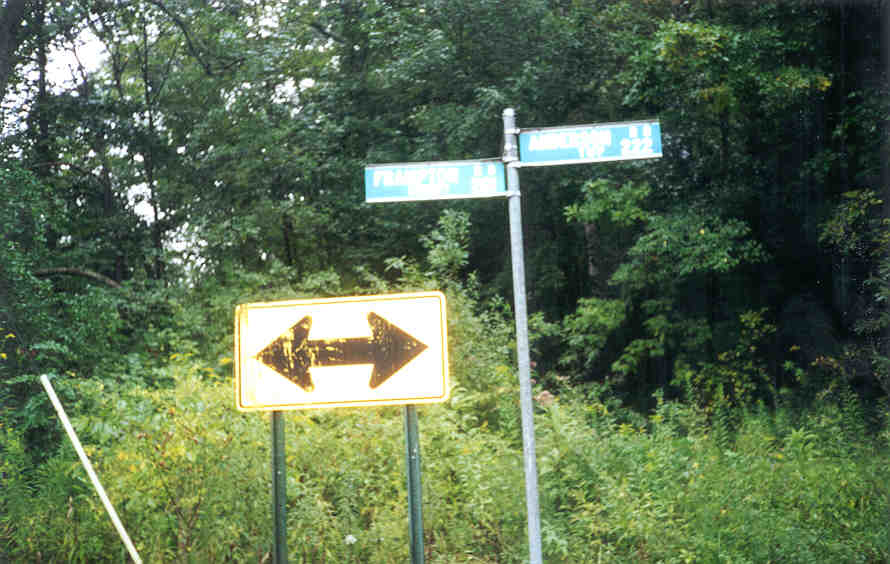
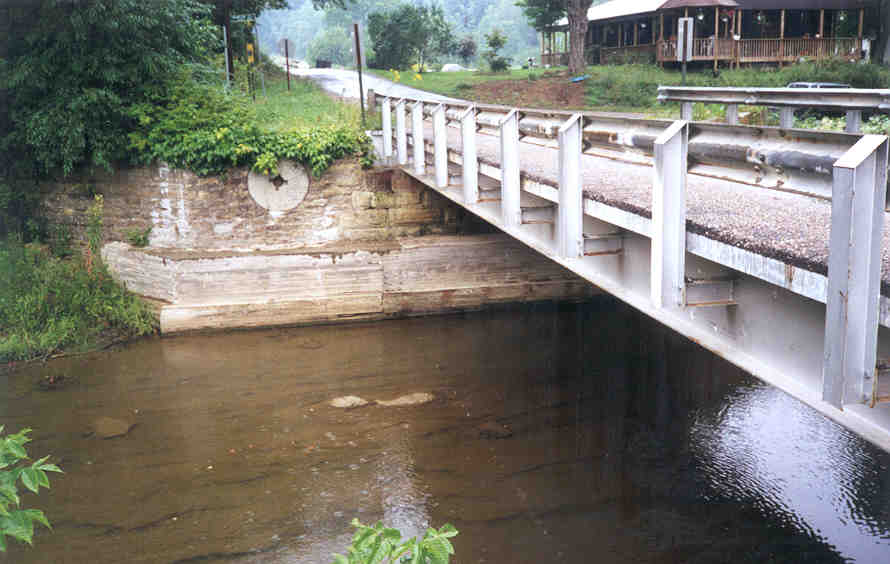

The town of Frampton was located in Fallsbury Township, in the extreme northeast corner of Licking County. A post office operated there between 1884 and 1901. Today the town is completely gone. The one resident lives on the land by coincidence.
After reading a little about Frampton I went to check it out. According to the Helwig book on Licking County, there is a plaque in a bridge abutment in Frampton marking where the town was. I couldn't find that, but I did find Frampton Road.

I also found the bridge, which looks old and spans a nice, scenic river with lots of shale lying along the bottom. Just upriver are some small rapids. Down near the water a place is visibe where a mill probably used to operate--the hinge for a water wheel, probably. As far as I could see, this is the last sign that Frampton ever existed.

I'm sorry to say I don't have much more information on Frampton. It was a small Ohio town which withered and died, as so many have. It's located in some really scenic woods, though, so you might visit there sometime. See if you can find anything I missed.
Back